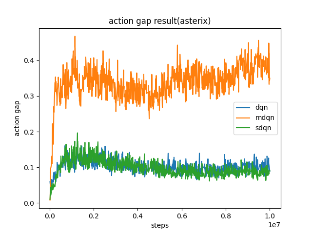
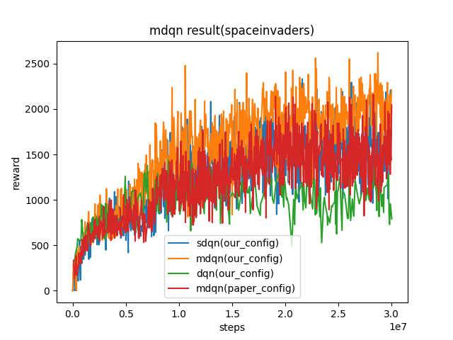
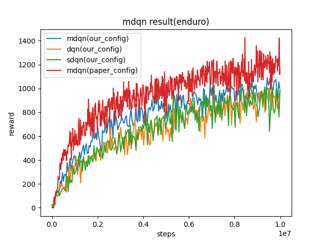

MDQN¶
Overview¶
MDQN was proposed in Munchausen Reinforcement Learning. They call this general approach “Munchausen Reinforcement Learning” (M-RL), as a reference to a famous passage of The Surprising Adventures of Baron Munchausen by Raspe, where the Baron pulls himself out of a swamp by pulling on his own hair. From a practical point of view, the key difference between MDQN and DQN is that MDQN adding a scaled log-policy to the immediate reward on the Soft-DQN which is is an extension of the traditional DQN algorithm with max entropy.
Quick Facts¶
MDQN is a model-free and value-based RL algorithm.
MDQN only support discrete action spaces.
MDQN is an off-policy algorithm.
MDQN uses eps-greedy for exploration.
MDQN increased the action gap, and has implicit KL regularization.
Key Equations or Key Graphs¶
The target Q value used in MDQN is:
For the log policy \(\alpha \tau \ln \pi_{\bar{\theta}}\left(a_t \mid s_t\right)\) we used the following formula to calculate
where \(q_k\) is the target_q_current in our code. For the max entropy part \(\tau \ln \pi_{\bar{\theta}}\left(a^{\prime} \mid s_{t+1}\right)\) , we use the same formula to calculate where the where \(q_{k+1}\) is the target_q in our code
And we replace \(\tau \ln \pi(a \mid s)\) by \([\tau \ln \pi(a \mid s)]_{l_0}^0\) because log-policy term is not bounded, and can cause numerical issues if the policy becomes too close to deterministic.
And we replace \(\pi_{\bar{\theta}}\left(a^{\prime} \mid s_{t+1}\right)\) by \(softmax(q-v)\) which official implementations used but not mentationed in their paper.
And we test action at asterix and get the same result as paper that MDQN could increase the action gap.
Pseudo-code¶

Extension¶
TBD
Implementations¶
The default config of MDQNPolicy is defined as follows:
- class ding.policy.mdqn.MDQNPolicy(cfg: dict, model: Optional[Union[type, torch.nn.modules.module.Module]] = None, enable_field: Optional[List[str]] = None)[source]
- Overview:
Policy class of Munchausen DQN algorithm, extended by auxiliary objectives. Paper link: https://arxiv.org/abs/2007.14430
- Config:
ID
Symbol
Type
Default Value
Description
Other(Shape)
1
typestr
mdqn
RL policy register name, refer toregistryPOLICY_REGISTRYThis arg is optional,a placeholder2
cudabool
False
Whether to use cuda for networkThis arg can be diff-erent from modes3
on_policybool
False
Whether the RL algorithm is on-policyor off-policy4
prioritybool
False
Whether use priority(PER)Priority sample,update priority5
priority_IS_weightbool
False
Whether use Importance Sampling Weightto correct biased update. If True,priority must be True.6
discount_factorfloat
0.97, [0.95, 0.999]
Reward’s future discount factor, aka.gammaMay be 1 when sparsereward env7
nstepint
1, [3, 5]
N-step reward discount sum for targetq_value estimation8
learn.updateper_collect_gpuint
1
How many updates(iterations) to trainafter collector’s one collection. Onlyvalid in serial trainingThis args can be varyfrom envs. Bigger valmeans more off-policy10
learn.batch_sizeint
32
The number of samples of an iteration11
learn.learning_ratefloat
0.001
Gradient step length of an iteration.12
learn.target_update_freqint
2000
Frequence of target network update.Hard(assign) update13
learn.ignore_donebool
False
Whether ignore done for target valuecalculation.Enable it for somefake termination env14
collect.n_sampleint
4
The number of training samples of acall of collector.It varies fromdifferent envs15
collect.unroll_lenint
1
unroll length of an iterationIn RNN, unroll_len>116
other.eps.typestr
exp
exploration rate decay typeSupport [‘exp’,‘linear’].17
other.eps.startfloat
0.01
start value of exploration rate[0,1]18
other.eps.endfloat
0.001
end value of exploration rate[0,1]19
other.eps.decayint
250000
decay length of explorationgreater than 0. setdecay=250000 meansthe exploration ratedecay from startvalue to end valueduring decay length.20
entropy_taufloat
0.003
the ration of entropy in TD loss21
alphafloat
0.9
the ration of Munchausen term to theTD loss
The td error interface MDQN used is defined as follows:
- ding.rl_utils.td.m_q_1step_td_error(data: collections.namedtuple, gamma: float, tau: float, alpha: float, criterion: <module 'torch.nn.modules' from '/opt/hostedtoolcache/Python/3.8.16/x64/lib/python3.8/site-packages/torch/nn/modules/__init__.py'> = MSELoss()) torch.Tensor[source]
Benchmark¶
environment |
best mean reward |
evaluation results |
config link |
comparison |
|---|---|---|---|---|
Asterix
(Asterix-v0)
|
8963 |

|
sdqn(3513) paper(1718) dqn(3444)
|
|
SpaceInvaders
(SpaceInvaders-v0)
|
2211 |
 | sdqn(1804) paper(2045) dqn(1228)
|
|
Enduro
(Enduro-v4)
|
1003 |
 | sdqn(986.1) paper(1171) dqn(986.4)
|
Key difference between our config and paper config:
we collect 100 samples, train 10 times. In the paper, they collect 4 samples, train 1 time.
we update target network for every 500 iterations, they update target network for every 2000 iterations.
the epsilon we used for exploration is from 1 to 0.05, their epsilon is from 0.01 to 0.001.
P.S.:
The above results are obtained by running the same configuration on seed 0
For the discrete action space algorithm like DQN, the Atari environment set is generally used for testing, and Atari environment is generally evaluated by the highest mean reward training 10M
env_step. For more details about Atari, please refer to Atari Env Tutorial .
Reference¶
Vieillard, Nino, Olivier Pietquin, and Matthieu Geist. “Munchausen reinforcement learning.” Advances in Neural Information Processing Systems 33 (2020): 4235-4246.